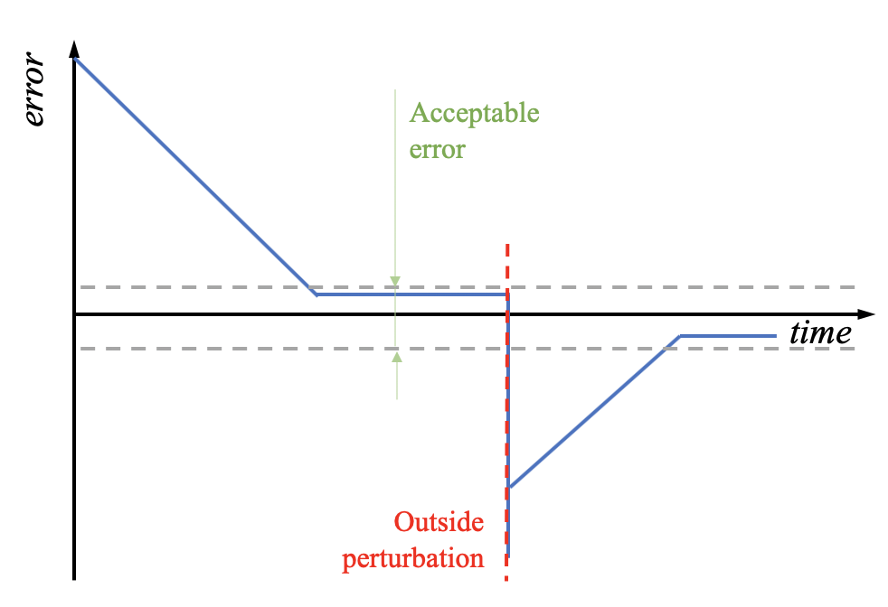

Mobile robotics - Control systems
Yesterday, you learned how to make a robot sense and how to make it act on its environment. But there was a big things missing to make the robot really move: a frame, a structure to hold all the parts together, we could say the bones of our mobile robot. Today we'll solve this problem: you'll build a frame, and thanks to this frame you will discover some standard mobile robotics problems and learn how to solve them.
What you will need
Every pair of learners will need:
- A computer equipped with a connection to internet and a browser (ideally Chrome),
- One micro:bit,
- A usb cable to connect the micro:bit to the computer,
- One bit:buggy kit,
- A flat piece of cardboard.
Building the Bit:Buggy
| Read the manual | Collect the parts | Building | Done |
|---|---|---|---|
Figure: Building the Bit:Buggy.
To build the robot, I invite you to follow the instructions provided in the Bit:Buggy isntruction manual. However this manual is missing some valuable information:
- Before starting identify the two bags that come along with the servo motors (in them there should be screws and several servo horns, that are white plastic pieces to put on the servos). Those pieces won't be of any use and are not listed in the component list of the bit:buggy car, so put them aside.
- In step 1. pay attention to the wheels: their two sides are differents, only one side can plug onto the motor end. Also, when screwing the wheel onto the motor, hold the wheel (if you don't you could make the motor turn using the screws and that might damage the motor).
- In step 3. make the cables of the motors stick upward. Moreover you have to push through to really get the plastic parts completely in one another.
- In step 4. be delicate with the screw. You should not have to force. If it's hard to screw it in, it's probably that the alignment is not correct. If it is, unscrew first, correct the alignment and try screwing again.
- Before step 6 put the batteries in if it is not yet in, and turn off the board with the switch.
- After step 6, when you plug the cables, remember what you learned previously: the black cable plugs onto G ! The picture of the instructions might be a bit misleading. By the way the cables are long (not like the picture), simply tuck them inside the robot frame and you are ready to roll.
Moving basics
The robot has now some bones to hold together its muscles, eyes and brain, it's time for you to remember what you learned yesterday to do a simple program to make it move.
Exercise 1
- 1.1 Program micro:bit to move forward when the button A is pressed and stop when B is pressed.
- 1.2 Rewrite your program to make it clean and reusable: define the functions setLeftSpeed(v) and setRightSpeed(v) for v in [-100, 100] so that to go straight at full speed we just have to call setLeftSpeed(100) and setRightSpeed(100).
- 1.4 Change the functions setLeftSpeed() and setRightSpeed() so that setLeftSpeed(v) does the same thing as setLeftSpeed(100) for v>100 and setLeftSpeed(-100) for v<-100.
- 1.4 Rewrite your program to make it even cleaner and reusable: define a function goStraight(v) that can be used to make the robot move forward (v > 0) or backward (v < 0) at the speed you want.
Control systems
Open-loop and closed-loop systems
Figure: Closed-loop system of an heater AC.
In engineering there are two types of control systems. The first one is the open-loop system, also known as non-feedback system. It is the kind of systems that we used in the previous exercises: the outputs of those systems do not produce changes on their inputs. Here is an analogy with an air conditioner/heater: an open loop system in this case would be a system with three buttons, heat, cool down and stop, and the user would have to press the button whenever he wishes the machine to do something different.
The second type of control system is the closed-loop one. In this one, there is a feedback, from the outputs to the inputs. Coming back to the aircond/heater example, to use the previous machine in a closed-loop system, you'd have to equip it with a temperature sensor and a controller. One way to use such a system, could be to program the controller to activate the heater if the measured temperature is below a given value and activate the air conditioner if the temperature is above it. That's what many of us have in our houses (without the air conditioner). In that case, the action of the heater would influence the temperature and therefore its measure. There is a feedback from the actuator of the machine to its input.
On/off clontrol law on the buggy
In this activity, you will learn how to program a closed-loop system using two different control laws. To do so you will use one more sensor which is integrated in the micro:bit that you did not use yet: its accelerometer. You will put the buggy on a slope and you will need to use a closed-control loop to avoid it flipping on the side. To know if the buggy is about to flip, you will need to look into the information that the accelerometer gives.
Question
Using the documentation of the accelerometer here find which of its axis informs us about the sideway (roll) inclination of the buggy.
Depending on this information, we can program the robot to turn left or right to face towards the top of the slope as presented in the figure below. Notice the feedback loop: turning has a direct effect on the roll and, as a result on the measure of the accelerometer.
| Roll | Roll |
|---|---|
 |
Figure: The buggy moves along the steepest ascent.
Exercise 2
- 2.1. Using display.scroll(), display the measure of the acceleration along the chosen axis. Tilt the buggy by holding it in your hands. What are the minimum values returned by the function accelerometer.get_.() ? What physical measure does that corresponds to ? What is the acceleration measure corresponding to no slope?
- 2.2. In the loop of the controller, define a variable error in which you will store the error between the desired measure along the chosen axis and its actual measure.
- 2.3. Program the buggy to move as described in the image above so that if the roll is over a certain threshold it turns towards the slope (which will reduce its roll) at 50% full speed. Test your program by putting the buggy on a piece of cardboard so that you can change the slope.
Propotional control law on the buggy
| On/Off | Proportional |
|---|---|
|  |
Figure: Evolution of the error with respect to time for both control laws.
Coming back to our heating analogy, the previous control law would correspond to this: the user sets a desired temperature or temperature range which is acceptable, if the measured temperature is lower than this the heating will be activated automatically, if the temperature is higher the air conditioning will be activated. The problem with such a strategy (called an on/off control law) is that if the temperature is much lower than what is acceptable, if we could, we would prefer the heater to work much harder than if we were close to the desired temperature. This alternative is called a proportional control law.
As we are able to control how fast our robot turns, it is possible to set the turning speed so that the more the robot is tilted on the side, the faster it will turn.
Exercise 3
- 3.1. Use the error defined in the previous exercise to control the turning speed of the robot using a proportional control law. Warning, you will need to scale the error. Test your program.
- 3.2. (Optional) Change you program slighly so that when the buggy is flat it stops and when ts pitch increases it goes forward faster and faster.
- 3.3. (Optional) Combine the exercises 3.1 and 3.2 to make the buggy move toward the top of the slope it is on.
Question
Is the error ever converging to zero ? If not why could that be ?
Conclusion
Control systems are everywhere. We have more and more robots around us because they do what we want them to do but also because they can easily make things as we want them to be, and this is thanks to control systems and control laws. While the proportional control law that you programmed this morning is a must in mobile robotics, we often need to go beyond that. As you probably noticed, the error can not converge to zero with such a simple control law. To really make it converge to zero we need more complex laws, namely PID, standing for Proportional-Integral-Derivative. If you ever wondered why you are studying integrals and derivatives, have a look at PIDs (here is a great ressource) and you'll find one reason to do so.